☰ VISION
Industrial Revolution
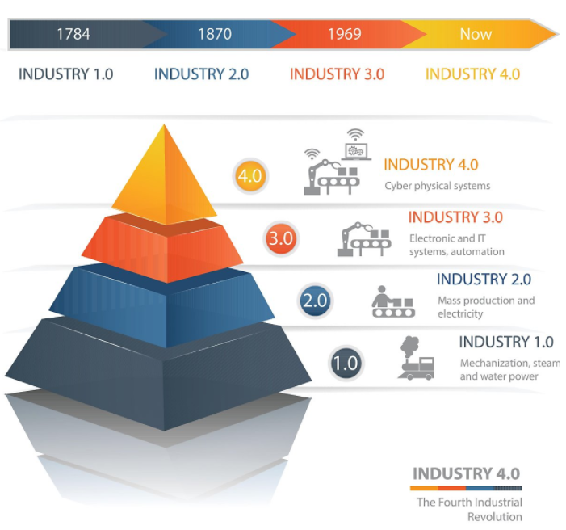
Flow
Industry 1.0 (1784~) : 영국에서 시작된 증기기관과 기계화로 대표되는 1차 산업혁명
Industry 2.0 (1870~) : 전기를 이용한 대량생산이 본격화된 2차 산업혁명
Industry 3.0 (1969~) : 인터넷이 이끈 컴퓨터 정보화 및 자동화 생산 시스템이 주도한 3차 산업혁명
Industry 4.0 (현재) : 로봇이나 인공지능을 통해 실제와 가상이 통합돼 사물을 자동적, 지능적으로 제어할 수 있는 가상 물리 시스템의 구축
Key Point
사물인터넷(IOT-Internet Of Things)
 생활 속 사물들을 유무선 네트워크로 연결해 정보를 공유하는 환경
가전 제품, 전자기기는 물론 헬스케어, 원격검침, 스마트홈, 스마트카 등 다양한 분야에서 사물을 네트워크로 연결해서 정보를 공유
생활 속 사물들을 유무선 네트워크로 연결해 정보를 공유하는 환경
가전 제품, 전자기기는 물론 헬스케어, 원격검침, 스마트홈, 스마트카 등 다양한 분야에서 사물을 네트워크로 연결해서 정보를 공유
자율주행차
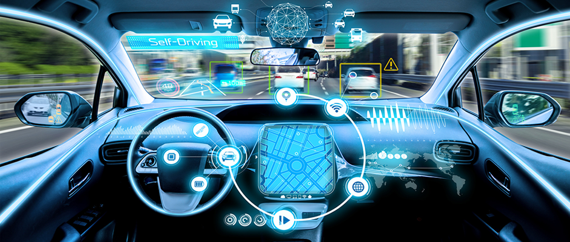
운전자의 제어 없이 도로의 상황을 파악해 자동으로 주행하는 자동차
가상현실(VR:Virtual Reality)
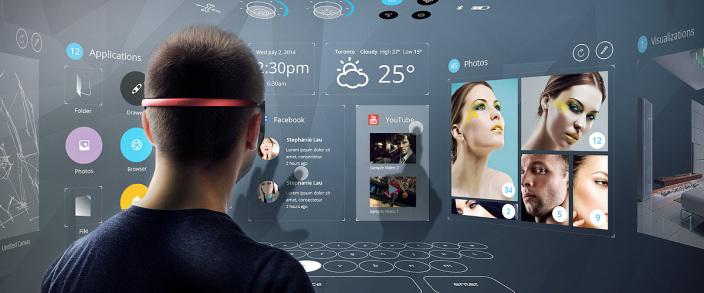
컴퓨터로 만들어 놓은 가상의 세계에서 사람이 실제와 같은 체험을 할 수 있도록 하는 최첨단 기술
머리에 장착하는 디스플레이 디바이스인 HMD를 활용해 체험 가능
의학 분야에서는 수술 및 해부 연습, 항공-군사 분야에서는 비행조종 훈련에 이용되는 등 각 분야에 도입되어 활발히 응용되는 중
드론(Drone)
 조종사 없이 무선전파의 유도에 의해서 비행 및 조종이 가능한 비행기나 헬리콥터 모양의 군사용 무인항공기의 총칭
2010년대를 전후하여 군사적 용도 외 다양한 민간 분야에도 활용 중 - 사람이 직접 촬영하기 어려운 장소를 촬영 및 인터넷 쇼핑몰의 무인택배 서비스
조종사 없이 무선전파의 유도에 의해서 비행 및 조종이 가능한 비행기나 헬리콥터 모양의 군사용 무인항공기의 총칭
2010년대를 전후하여 군사적 용도 외 다양한 민간 분야에도 활용 중 - 사람이 직접 촬영하기 어려운 장소를 촬영 및 인터넷 쇼핑몰의 무인택배 서비스
Variable
- 과학기술과 생체의학의 발전 - 인공지능, 인간형 로봇, 인간과 기계의 융합, 나노기술, 3D 프린팅, 증강현실, 생체의학, 유전학
- 고령사회와 경제환경 변화 - 노인인구의 증가와 저조한 출산율
- 위기의 지구 - 2019(70억명) -> 2100(110억명) 으로 인구증가
- 인간의 도전 - 수많은 위험과 도전에 직면하고 재미를 찾기위한 탐험을 강행
Prospective Job
홀로그래피 전문가
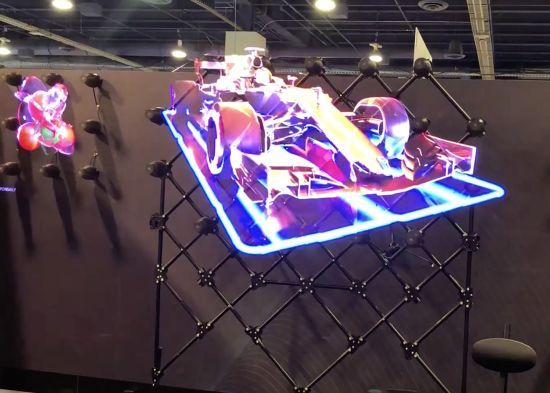
우리 몸이나 기계의 정밀 진단, 자연과 문화의 입체 보존처럼 의료, 건축, 오락, 영상 장치 등 응용 범위는 무궁무진
의료 분야에서는 X선이나 초음파를 사용해서 찍은 단층사진을 입체 화상화해서 정확한 진단이 가능
공업 분야에서는 홀로그래피를 사용한 정밀 계측이 가능해질 거고, 건축, 토목, 자동차 설계 분야에서는 컴퓨터로 기계와 건물의 모습을 여러 각도에서 계산 가능
홀로그래피 전문가가 되기 위해서는 전기, 전자공학, 기계공학, 의료공학 분야를 공부
증강 현실 전문가

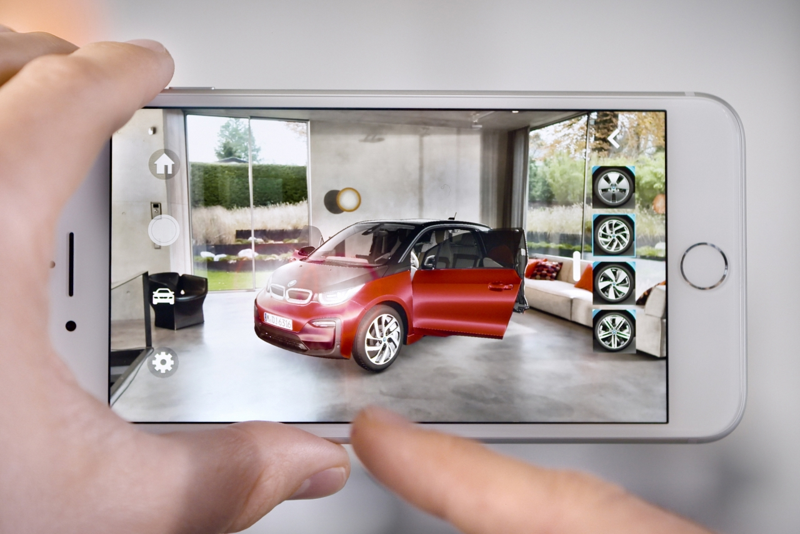
‘증강 현실’이란 모니터나 스크린, 액정 등 ‘화면’을 통해 눈으로 보이는 현실 세계에 정보나 가상의 물체를 합성해서 여러 가지 편의를 제공하는 기술
가상 영상을 실제 영상에 오버랩해서 둘의 구분을 모호하게 만드는 것이 증강 현실의 특징
증강 현실 전문가가 되기 위해서는 컴퓨터공학, 컴퓨터소프트웨어공학, 정보처리학 등을 공부
인공지능 전문가
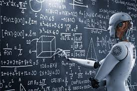
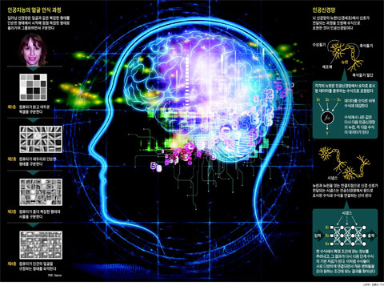
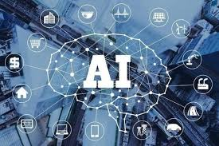
인공지능이란 사람처럼 스스로 생각하고, 이해하고, 행동하는 능력을 컴퓨터 프로그램으로 실현한 기술
인공지능 로봇, 인공지능 청소기, 인공지능 컴퓨터 등 여러 분야에서 인공지능 기술이 사용
인공지능 전문가가 되기 위해서는 수학, 수리논리학, 기초과학, 심리학, 프로그래밍 등을 공부
양자 컴퓨터 전문가
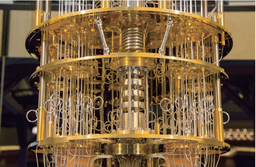
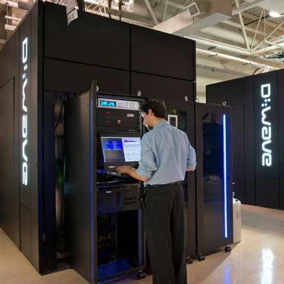
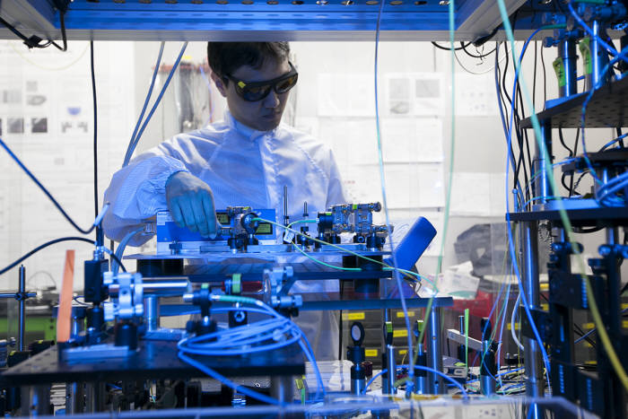
양자 컴퓨터는 원자 이하의 차원에서 입자의 움직임에 기반을 두고 계산이 수행되는 컴퓨터
양자 컴퓨터는 동시에 여러 가지 생각을 할 수 있으며, 빠르게 연산할 수 있는 능력 보유
양자 컴퓨터 전문가가 되기 위해서는 전기공학, 전자공학, 원자력공학, 통신공학 등을 전공
무인 자동차 엔지니어
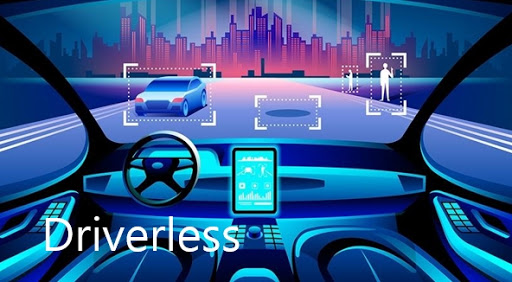
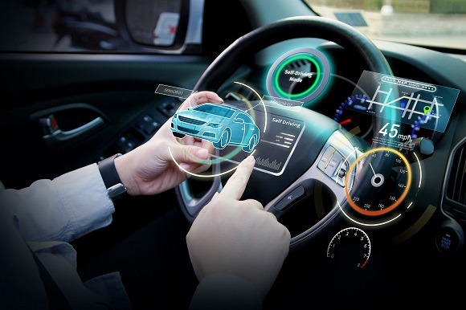
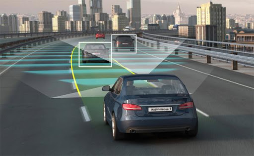
무인 자동차란 운전자의 조작 없이 차량이 스스로 주변 환경을 인식해서 목적지까지 안전하게 주행하는 자동차
정확한 위치 파악과 차량 제어 기술이 핵심으로 자동차에 적용되는 ‘IT의 꽃’
무인 자동차 엔지니어가 되기 위해서는 물리학, 기계공학, 시스템공학, 자동차공학, 컴퓨터공학 등을 전공
빅데이터 전문가
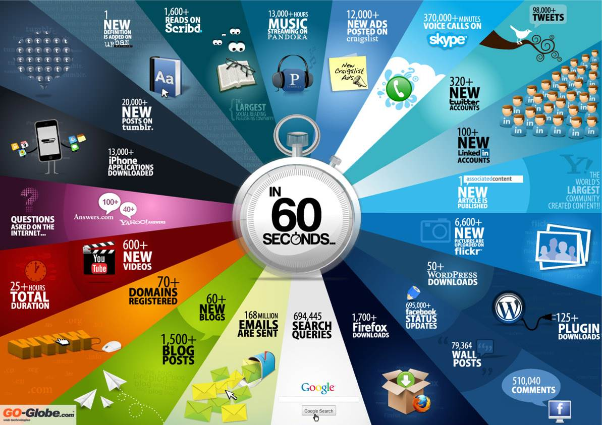
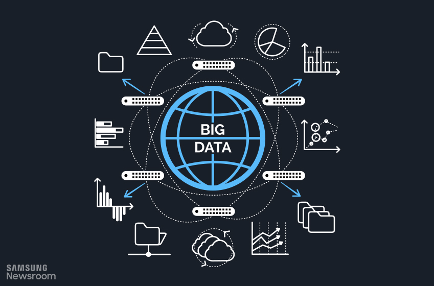
넘쳐나는 정보의 바다에서 개인/기업에게 필요한 정보만을 추출하고 분석하여 제공하는 빅데이터 기술
빅 데이터 전문가는 금융 분야, 유통 분야, 제조 분야, 서비스 분야, 의료 분야, 공공 분야 등 다양한 영역에서 활동이 가능
빅 데이터 전문가가 되기 위해서는 통계학, 컴퓨터공학 , 산업공학 등을 전공
사물인터넷 전문가
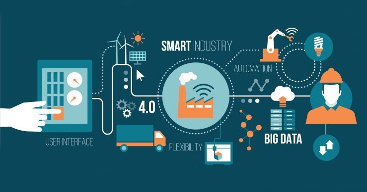
주변의 사람, 사물, 공간과 관련된 데이터를 인터넷으로 연결하여 새로운 정보가 생성 · 수집 · 공유 · 활용되도록 하고, 이를 통해 새롭게 가치 있는 것을 만들거나 이전에 없던 편리함을 사람들에게 제공
사물 인터넷 전문가는 거의 모든 분야에서 활동할 수 있지만, 주로 농산업, 자동차 산업, 광산업, 에너지 및 재생에너지, 헬스 케어, 보안 등의 분야에서 활동
사물 인터넷 전문가가 되기 위해서는 보통 고졸 이상의 학력이 요구되며 컴퓨터와 IT 관련 지식이 필요하므로 대학은 정보 통신공학, 컴퓨터공학, 소프트웨어공학, 정보 보호공학 등을 전공